在Azure雲端平台建立CentOS虛擬機器，並安裝遠端桌面服務、R軟體及MySQL資料庫
前言
在產學合作案中，合作公司希望能夠將我們開發的程式放在CentOS作業系統中執行，畢竟若要商轉的話，Linux作業系統是免費的，可以很省錢。但我對Linux系統沒有很熟悉，之前上課時有稍微玩過沒有到很熟練。為了能夠測試程式是否能在CentOS中運作，我自己去Azure雲端平台嘗試建立一個虛擬機器來進行測試，這篇是我建立環境的流程筆記。
本篇文章將介紹如何在Microsoft Azure雲端平台上，建立CentOS作業系統的虛擬機器。並且能夠透過Windows遠端桌面連入進行控制，以及在CentOS作業系統上安裝R軟體和MySQL資料庫。
CentOS為Linux系統之一，有興趣的人可參考維基介紹。
參考來源部分，主要是參考賽門於iT邦幫忙網站發表的系列文章連線Microsoft Azure的CentOS 7虛擬機器，並透過Google尋找網路資源解決遇到的問題。
另外這是我第一次碰Linux系統，本人非資訊背景出身。文章僅供參考，有發現錯誤或有問題的地方，歡迎底下留言指教，謝謝您！
在Azure建立CentOS虛擬機器
首先需要至Microsoft Azure先開設一個帳戶，目前提供微軟提供1個月6,300元的免費試用額度，讓使用者體驗。在申辦的過程中，會需要信用卡卡號，但不會幫你扣款，僅做驗證。
帳戶辦完後，登入Azure網站，並點選入口網站，即可開始建立虛擬機器。建立虛擬機器的方式，可參考Microsoft Azure 虛擬機器完全攻略，裡面有詳細的影音操作說明，包含Windows及Linux作業系統建置方式。以下簡單說明建置步驟：
在入口網站畫面左側點選虛擬機器選項：

按下左上角的新增，新增一台虛擬機器。接下要選擇作業系統，在搜尋列上輸入centos，點選CentOS-based 7.4：
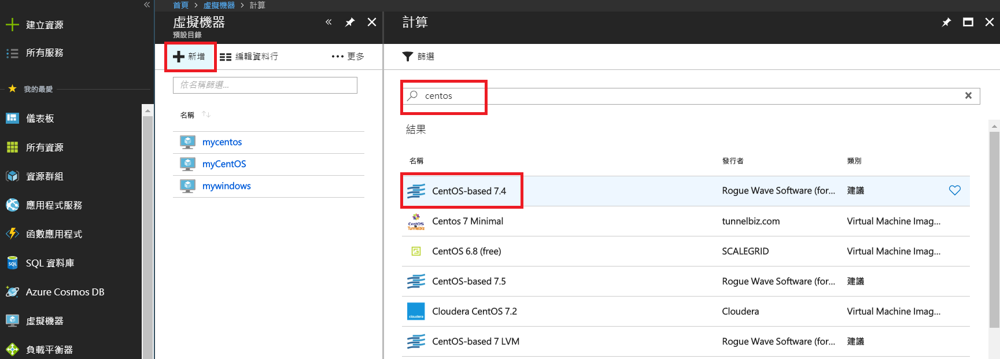
進入確認畫面，直接點選建立：
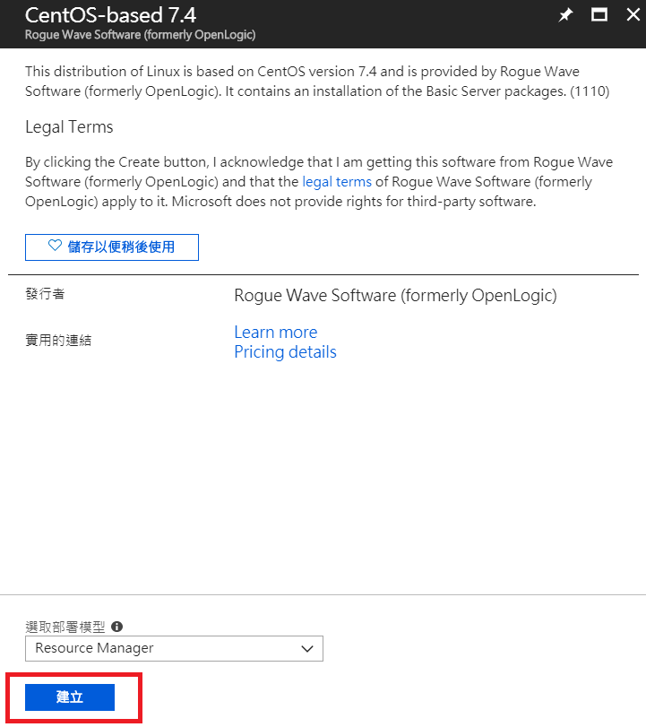
接下來要依序設定共4個步驟，第1個步驟選項部分：
- 名稱： 在Azure雲端平台上做虛擬機器辨識用的。
- 使用者名稱： 待會要登入虛擬機器時的帳號。
- 驗證類型： 可選SSH公開金鑰及單純用密碼形式。此處安全層級要高的話，應該選SSH公開金鑰會比較合適，但為方便此處還是選密碼。
- 資源群組： 方便管理多台虛擬機器使用，有時候一個專案可能需要開多台虛擬機器(例如分散式運算)，可以將多台虛擬機器劃分在同一個群組底下方便做管理。此處我們只用1台虛擬機器，所以資源群組的名稱就依個人喜好命名即可。
- 位置： 則是看虛擬機器想要架設在哪個地點，不同的地點收費會不一樣。
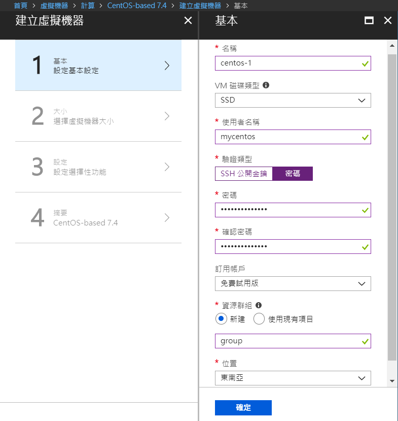
第2個步驟選項部分，則是挑選虛擬機器的規格，不同的規則會有不同的收費價錢，此處選擇Microsoft推薦的等級(即前面有星星的)：2顆CPU、記憶體8G及SSD硬碟16GB。
Microsoft Azure有提供定價計算機，讓使用者可以計算虛擬機器在各個地點及配備所需要的金額。

第3步驟部分，將公用輸入連接埠5個選項全部打開後，按下確定。
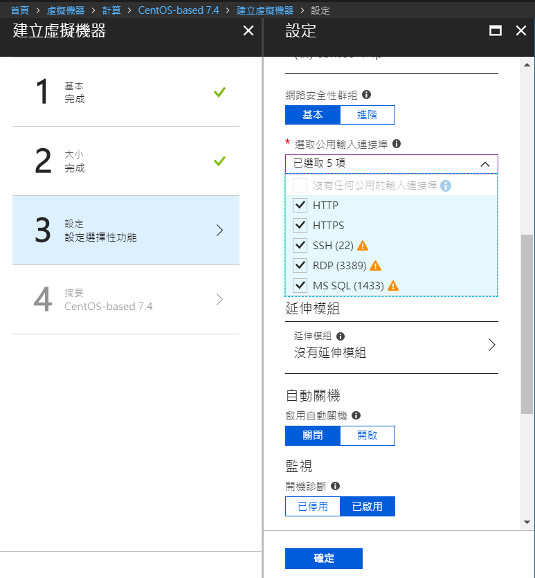
第4步驟部分，是做最後確認，並且會預估此次開設虛擬機器每小時大概要花費的費用。確認無誤後，按下建立。
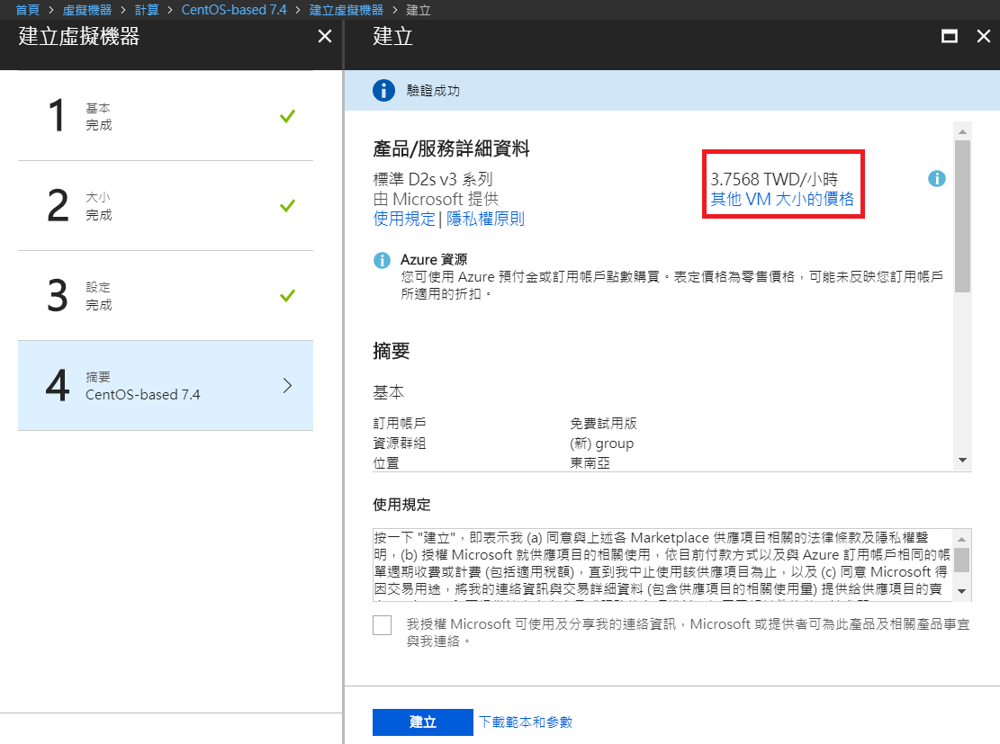
按下建立後，會自動跳轉回儀表板，並且會出現正在部署的動態框，此處需要等待一段時間。等部署結束後，就可以準備開始連入虛擬機器。
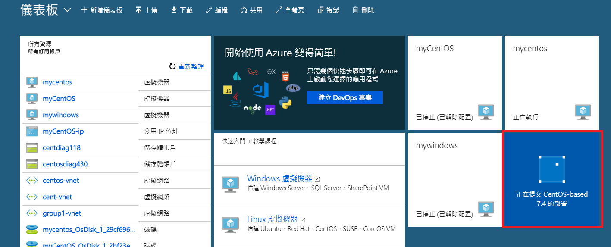
架設完後，點選動態框進去。
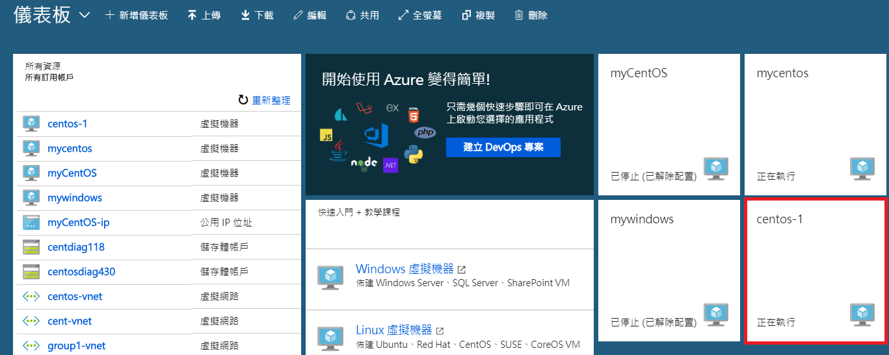
此畫面下，可看到此台虛擬機器的IP及運作狀況。待會可透過IP連到這台虛擬機器進行溝通。
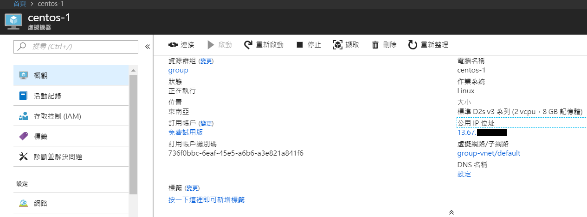
如果此處是架設Windows作業系統，我們可以利用自己電腦的Windows遠端桌面服務，輸入IP及使用者帳密，即可快速連到該電腦進行操作。但因為此處我們是架設Linux系統，需要再安裝其他軟體，讓Linux系統能與Windows系統做連結。
Windows遠端桌面連接CentOS虛擬機器方式
在Azure上架設好虛擬機器後，接下來我們要想辦法讓我們自己的電腦(Windows)能夠遠端連到CentOS作業系統，此處我們需要安裝3個軟體：
- GNOME： Linux的桌面環境軟體之一，安裝此軟體後，能讓Linux擁有像Windows的桌面環境。
- VNC Server： 讓Linux作業系統能夠從遠端連入進行操控。
- xrdp： 能使用Windows遠端桌面連線至Linux桌面環境。
下載putty
因為虛擬機器目前無桌面環境，需要透過Bash指令來安裝。首先先下載putty.exe，此軟體能讓我們用Bash的方式和CentOS溝通。
putty.exe下載位置: https://www.chiark.greenend.org.uk/~sgtatham/putty/latest.html
網站下載位置示意圖
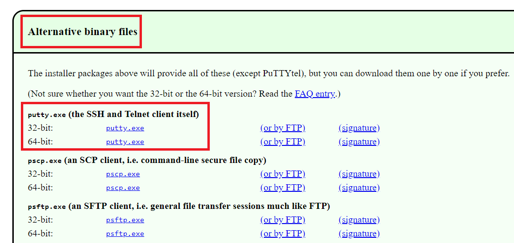
下載putty.exe後，打開輸入虛擬機器IP按確認即可使用：
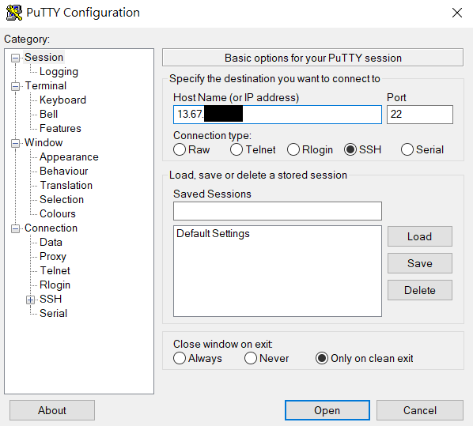
首次連入時，會出現此視窗，直接點選是即可：
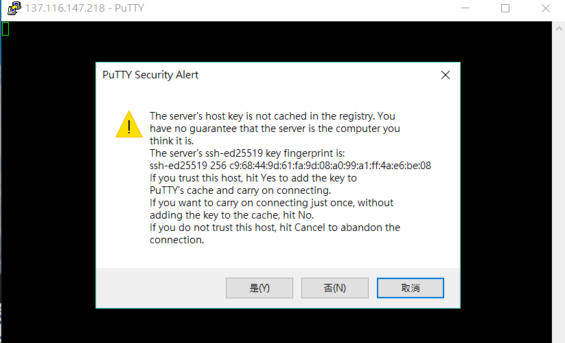
連入後，輸入帳號及密碼，即可與虛擬機器進行溝通：
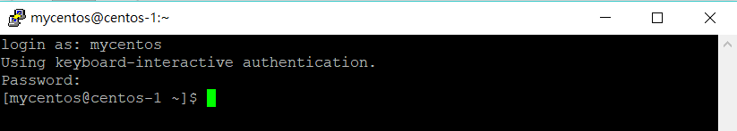
安裝EPEL
EPEL(Extra Packages for Enterprise Linux)是由Fedora社群維護打造，提供多個新版本的套件庫供Linux系統使用。參考網站: https://fedoraproject.org/wiki/EPEL
在putty輸入下列指令，即可安裝最新版本。
sudo yum install https://dl.fedoraproject.org/pub/epel/epel-release-latest-7.noarch.rpm
安裝完成畫面
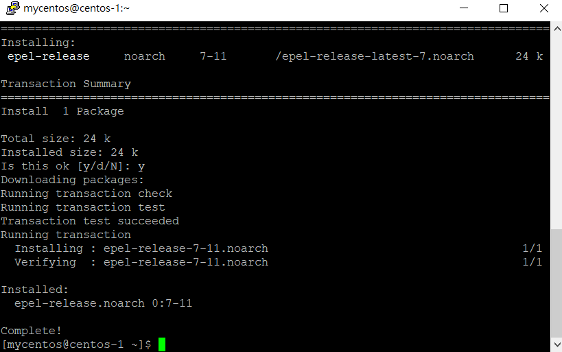
輸入以下指令可確認是否安裝：
sudo yum list installed | grep epel
若有回傳結果，代表已成功安裝：
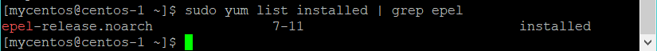
安裝Nux dextop
Nux dextop是另外一個Linux的套件庫，此處需要進行安裝。
sudo rpm -Uvh http://li.nux.ro/download/nux/dextop/el7/x86\_64/nux-dextop-release-0-1.el7.nux.noarch.rpm
安裝GNOME桌面環境
sudo yum groupinstall basic-desktop desktop-platform x11 fonts
sudo yum groupinstall "GNOME Desktop" "Graphical Administration Tools"
- 備註: 上面這個指令複製到putty時，上引號(")會變成全形，需要手動改成半形才會正常安裝，執行後需要等待安裝一段時間。
sudo ln -sf /lib/systemd/system/runlevel5.target /etc/systemd/system/default.target
安裝VNC Sever及 xrdp
sudo yum install xrdp tigervnc-server
設定xrdp
執行xrdp
sudo systemctl start xrdp.service
觀察xrdp運作情況
sudo netstat -antup | grep xrdp
畫面如下所示：
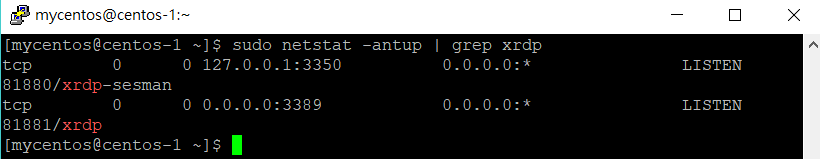
設定重開機後會自動啟動xrdp
sudo systemctl enable xrdp.service
設定VNC Sever
sudo vncserver
執行上一行程式碼後，會需要設定VNC Sever密碼。
sudo pkill vnc
sudo cp /lib/systemd/system/vncserver@.service /etc/systemd/system/vncserver@:1.service
sudo vi /etc/systemd/system/vncserver@:1.service
執行上行程式碼後，會開啟vi文件，在vi文件中尋找下列段落並進行修改:
[Service]
Type=forking
Clean any existing files in /tmp/.X11-unix environment
ExecStartPre=/bin/sh -c '/usr/bin/vncserver -kill %i > /dev/null 2>&1 || :'
ExecStart=/sbin/runuser -l <USER> -c "/usr/bin/vncserver %i"
PIDFile=/home/<USER>/.vnc/%H%i.pid
ExecStop=/bin/sh -c '/usr/bin/vncserver -kill %i > /dev/null 2>&1 || :'
將文件中2個<user>改為虛擬機器的使用者名稱(我的使用者名稱為mycentos)，並在ExecStart開始的這一行後方加上-geometry 1900x1080
參數。1920x1080參數代表顯示解析度，可依Windows桌面的解析度自行調整。
- 注意: 解析度中間的x是英文小寫x，不是*。
修改完後，vi文件內容如下所示：
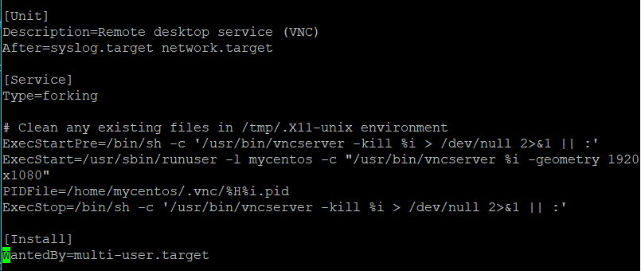
儲存文件(輸入:wq)後跳出，啟動VNC Sever服務：
sudo systemctl daemon-reload
sudo systemctl start vncserver@:1.service
sudo systemctl enable vncserver@:1.service
修改xrdp設定
sudo vi /etc/xrdp/xrdp.ini
在vi文件中尋找下列段落(要拉很下面):
[Xvnc]
name=Xvnc
lib=libvnc.so
username=ask
password=ask
ip=127.0.0.1
port=-1
將上述段落的port參數改為5901，修改後vi文件為:
[Xvnc]
name=Xvnc
lib=libvnc.so
username=ask
password=ask
ip=127.0.0.1
port=5901
修改完後儲存:wq，重新啟動xrdp服務:
sudo systemctl restart xrdp.service
重新開機
sudo reboot
Windows遠端桌面連入CentOS虛擬機器
上述步驟處理完後，即可用Windows遠端桌面連入CentOS虛擬機器：
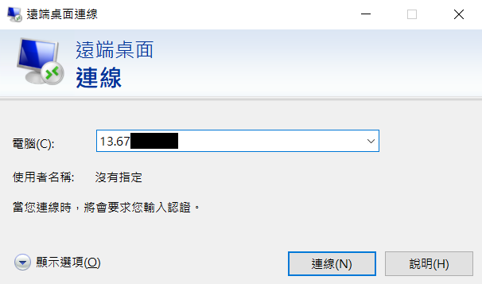
進入後，還需要再輸入CentOS使用者帳號及密碼：
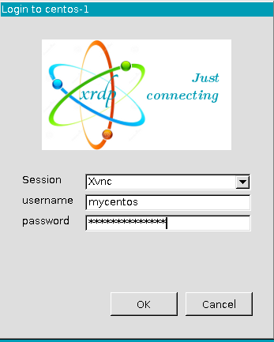
登入後，即可看到CentOS虛擬機器的桌面：
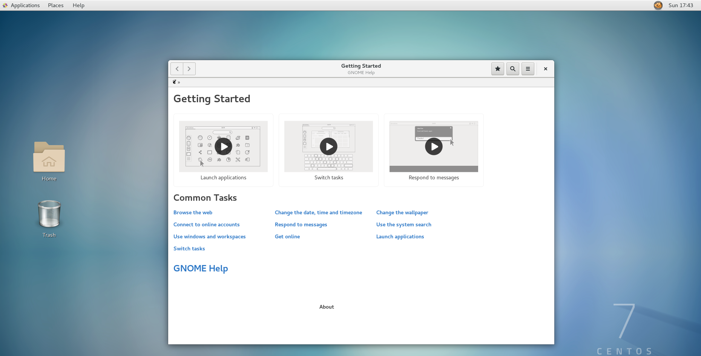
安裝R程式
安裝R程式很簡單，直接在putty上直接輸入指令：
sudo yum install R
安裝Rstudio
安裝方式及安裝檔案路徑可參考Rstudio網站: https://www.rstudio.com/products/rstudio/download-server/
sudo wget https://download2.rstudio.org/rstudio-server-rhel-1.1.453-x86_64.rpm
sudo yum install rstudio-server-rhel-1.1.453-x86_64.rpm
安裝完後，需先至Azure設定輸入埠規格，將port=8787開啟。並在Centos防火牆加上例外規則。
sudo firewall-cmd --permanent --zone=public --add-port=8787/tcp
sudo firewall-cmd --reload
規則開啟後，直接在網址輸入http://:8787即可連入Rstudio作業環境。
安裝MySQL
建議安裝5.7版，最新的8.0版安裝後在新增使用者及在R軟體安裝RMySQL套件會報錯
參考網站: https://www.digitalocean.com/community/tutorials/how-to-install-mysql-on-centos-7
指定安裝版本
sudo wget https://dev.mysql.com/get/mysql57-community-release-el7-9.noarch.rpm
sudo rpm -ivh mysql57-community-release-el7-9.noarch.rpm
安裝MySQL
sudo yum install mysql-server
啟動MySQL
sudo systemctl start mysqld
觀察MySQL運作狀況
sudo systemctl status mysqld
取得root暫時密碼
sudo grep 'temporary password' /var/log/mysqld.log
重新設定root密碼，輸入此行後，將暫時密碼輸入進去，即會啟動MySQL：
sudo mysql -uroot -p
在MySQL程式中，輸入MySQL程式的密碼修改語句，即可更改密碼：
ALTER USER 'root'@'localhost' IDENTIFIED WITH mysql_native_password BY '[要改的密碼]';
密碼更改完後，離開資料庫
quit
連線至MySQL，測試是否能夠運作
sudo mysql -u root -p
在MySQL程式中，輸入MySQL程式碼查詢目前有的資料庫
show databases;
若沒問題，離開MySQL資料庫
quit
安裝MySQL Workbench
MySQL Workbench是MySQL資料庫的整合開發環境，可讓使用者不用輸入複雜的指令，來管理資料庫。
參考網站:
- https://dev.mysql.com/doc/workbench/en/wb-installing-linux.html
- https://stackoverflow.com/questions/47475710/mysql-workbench-cant-open-on-centos-7
目前MySQL workbench最新版本在CentOS7上支援不佳，安裝後無法打開，因此需指定舊版本安裝。
sudo yum remove mysql-workbench
sudo yum install yum-plugin-versionlock
sudo yum install mysql-workbench-community-6.3.8-1.el7.*
sudo yum versionlock mysql-workbench-community-6.3.8-1.el7.*
安裝完後，若要讓外部連入資料庫。需先至Azure設定輸入埠規格，將port=3306開啟。並開啟防火牆例外規則(port=3306)。
sudo firewall-cmd --permanent --zone=public --add-port=3306/tcp
sudo firewall-cmd --reload
處理MySQL Workbench中文亂碼問題
MySQL在安裝時會默認將字碼設定為latin，若將utf-8字碼的中文字資料匯入至MySQL資料庫後，在MySQL Workbench看資料時會變成亂碼。因此需要將MySQL資料庫字碼設定改為utf-8。
參考網站: https://stackoverflow.com/questions/3513773/change-mysql-default-character-set-to-utf-8-in-my-cnf
進入MySQL設定檔
sudo vi /etc/my.cnf
在my.cnf文件中，[mysqld]底下加入3行指令:
collation-server = utf8_unicode_ci
init-connect='SET NAMES utf8'
character-set-server = utf8
輸入完後，如下圖所示，然後儲存(:wq)
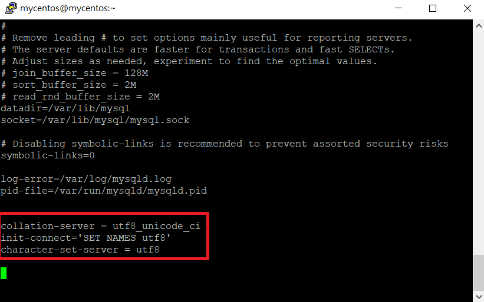
重啟MySQL
sudo systemctl stop mysqld
sudo systemctl start mysqld
在MySQL workbench內，輸入MySQL程式碼，確認字碼是否轉成功
show variables like 'char%';
查詢結果應如下所示：
| Variable_name | Value |
|---|---|
| collation_connection | utf8_general_ci |
| collation_database | utf8_unicode_ci |
| collation_server | utf8_unicode_ci |
安裝R套件發生內存不足問題
我在安裝R套件(fBasics)時，有遇到記憶體不足問題：
Error in system2(file.path(R.home("bin"), "R"), c(if (nzchar(arch)) paste0("--arch=", :
cannot popen ' '/usr/lib64/R/bin/R' --no-save --slave 2>&1 < '/tmp/Rtmpw5YoIV/file15cc3e680577'', probable reason 'Cannot allocate memory'
套件安裝時需要大量記憶體，記憶體空間不足就會發生這個狀況。若要解決此狀況，可透過Linux 上的「Swap 空間」來協助。Azure本身的Swap設定是關起來的，需要修改設定檔來開啟。
參考文章： https://serverfault.com/questions/695616/how-to-create-a-swap-for-azure-ubuntu-vm
修改CentOS作業系統為繁體中文語系
如果在操作CentOS的桌面環境覺得看英文太難，可以來透過設定來修改。
參考網站: https://www.phpini.com/linux/rhel-centos-7-change-system-locale
sudo localectl set-locale LANG=zh_TW.utf8
修改完後重開機，即可看到桌面環境轉為繁體中文。
sudo reboot